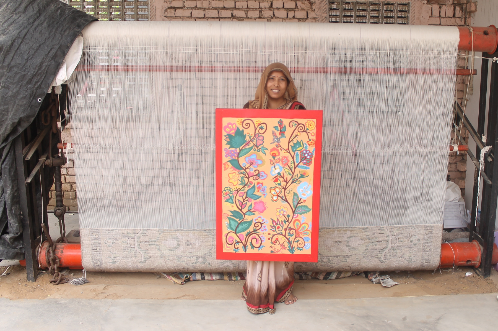
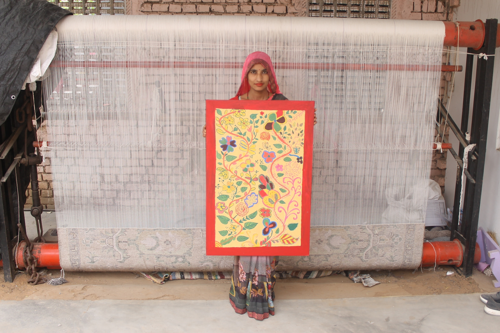
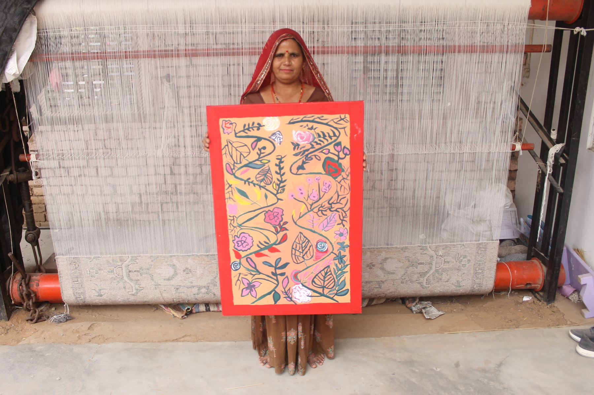
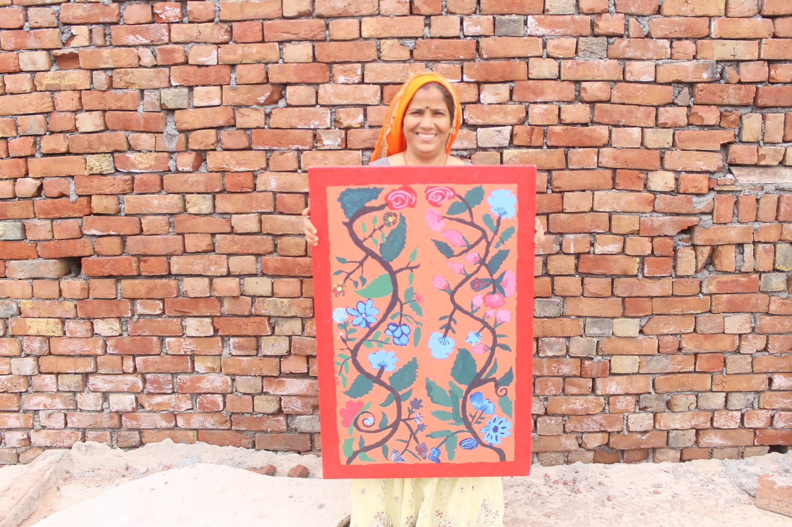
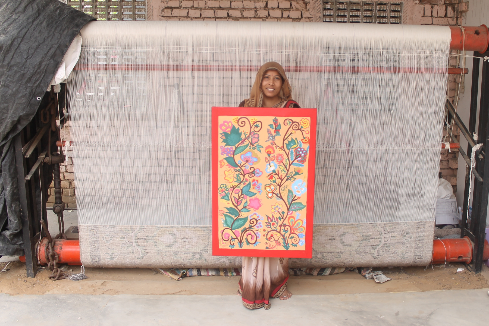
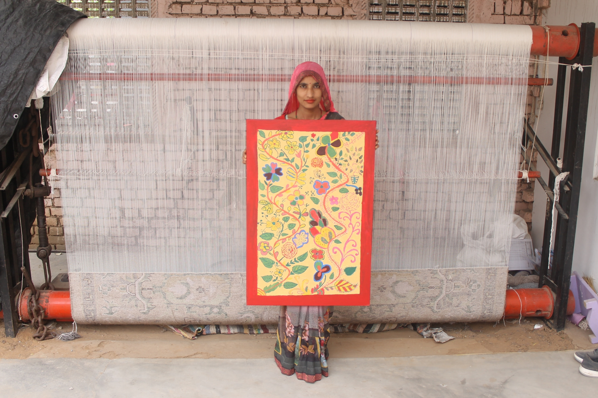
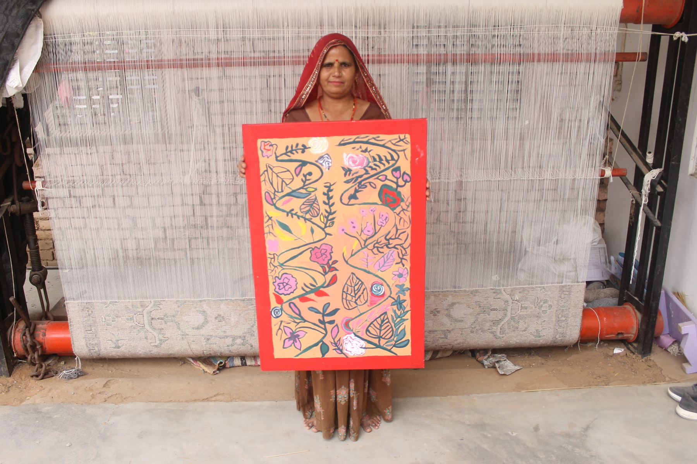
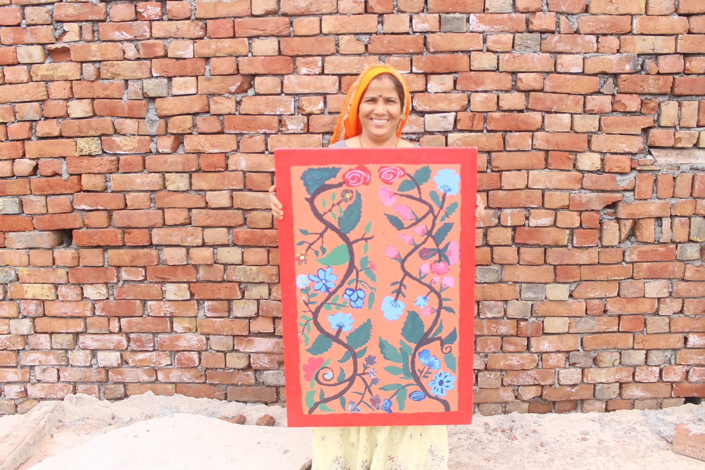

❮
 ❯
❯
Jaipur Rugs Foundation in collaboration with Jaipur Rugs Company works in rural villages in North India to produce high quality rugs. I taught drawing and painting to these artisans in the hopes of developing their creativity so that they can improve their rug-weaving skills. The theme was Mughal Floral Motifs. Mughal art is a significant part of their history, however, it is now not practiced by many. Mughal Floral Motifs is an element which is vanishing in the traditional arts and crafts of India and my intention was to reintroduce this practice to the artisans who make these rugs.
A series of workshops in drawing and painting were conducted to over 70 participants which consisted of drawing and painting workshops which focused on their technical ability and also gave the artisans a thematic framework for creative expression. After the initial series of workshops, the number of participants reduced and only a handful went on to the final stage of the project. The entire program was done within a span of four months and a select few artisans went on to make final paintings on canvases. The artisans who made final works on canvas got the opportunity to showcase their work in a final exhibition which was held at Jawahar Kala Kendra in Jaipur.
Photographs of my students and their final works on canvas are below:
 







The Usta Kala Project was developed to transform the practice of the Usta Artisans in transitioning from the production of traditional craft objects to the creation of contemporary art objects. The artisans involved belong to a small community in Bikaner, where the Usta craft is practiced exclusively and this craft has been passed down through generations. The project began with twelve artisans and was structured around a series of workshops focusing on conceptual development, composition, and color theory.
Due to the nomadic nature of the artisans’ profession, participation gradually decreased over the course of the project, and ultimately only one artisan was able to complete the final stage. The resulting works were realized as objects of contemporary art, representing a significant shift from the conventional production of traditional craft objects and marking an important re-contextualization of Usta Craft within a contemporary art framework.
Although the project was only partially successful, it generated significant insights through its implementation. The artisan who completed the final artworks recognized that producing contemporary art objects opened new markets for selling his work. The shift from traditional craft objects to contemporary art created new opportunities, including increased visibility and potential support from visual art galleries. This shift from traditional craft to contemporary art proved conceptually successful and was clearly understood by the artisan who completed the final works.
Photographs documenting the process of creating the contemporary art objects by the artisan Ram Bhadani, including the final works, are shown below: